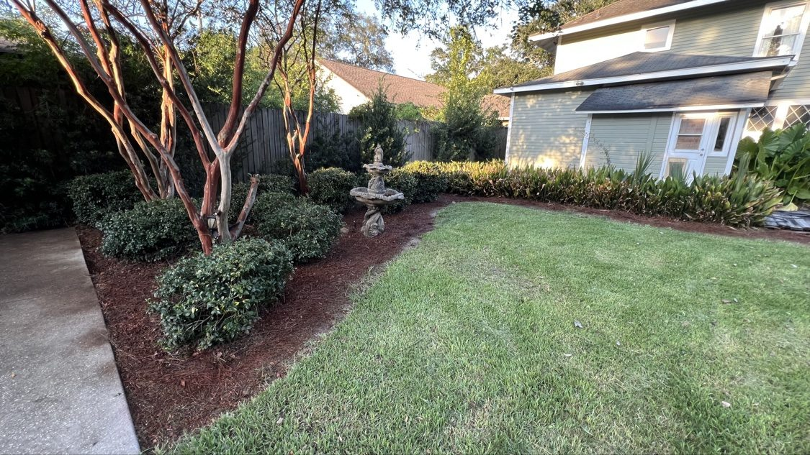

From the blog
Fence Cleaning in Mobile, AL: What to Expect
November 23, 2026

A fence is one of the first things people see when they pull up to your home, and in Mobile it does not take long for one to look tired. Humidity feeds algae and mildew, pine trees drop sap and needles, and summer sun fades wood to gray. A professional fence cleaning brings the color back and adds years to the life of the boards. Here is what the job actually involves.
Wood fences
Most privacy fences around Tillmans Corner, Theodore, and Grand Bay are wood, usually pine or cedar. Wood needs a gentle touch. Too much pressure scars the boards, raises splinters, and strips the surface. A proper wood fence wash uses low pressure with a cleaning solution that kills the algae and mildew first, then rinses the grime away. The boards come out looking close to new, with the natural grain showing again instead of a flat gray coat.
Vinyl fences
Vinyl fences are common in newer neighborhoods in West Mobile, Semmes, and Irvington. Vinyl holds up well, but it shows every bit of green algae and black mildew, especially on the shaded side of the yard. Vinyl cleans up with a soft wash. The solution does the work, and a low pressure rinse takes the rest. No scrubbing, no harsh brushes, and no damage to the panels.
What a fence cleaning covers
- Both sides of the fence. The street side gets the attention, but the yard side grows just as much algae. A full job covers both.
- Gates and posts. Gates collect grime around the hinges and latches, and posts are where mildew starts. They get washed as part of the job.
- The ground line. The bottom few inches of a fence stay damp the longest and grow the most algae. That band gets extra attention.
- Nearby concrete. Runoff from a fence wash can leave streaks on a patio or walkway, so a good crew rinses those surfaces as they go.
When to seal or stain after
Cleaning is the first step, not the last one, for a wood fence. Once the boards are clean and fully dry, usually a few sunny days later, that is the right time to seal or stain. Sealer locks out moisture and slows the next round of algae. Stain adds color and protection in one step. Do not seal a dirty fence. The sealer traps the grime underneath and the finish will not last. Clean first, let it dry, then protect it.
How often to clean a fence
In Mobile, plan on a fence cleaning every one to two years. Shaded yards and yards near trees may need it every year. If the fence is green on the north side, gray on the sunny side, or black at the bottom, it is ready. A regular wash is far cheaper than replacing boards that rotted because algae and moisture sat on them season after season.
What it costs
Fence cleaning is priced by the length of the fence and the material, so the best way to get a number is a free custom quote. Send the rough length, the material, and a photo or two, and we will price it the same day. Pair it with a house wash or a driveway wash and the whole property gets done in one visit.
Is your fence looking green or gray?
Kinney Cleaning Services does wood and vinyl fence cleaning across Mobile, Tillmans Corner, Theodore, Semmes, Grand Bay, and Irvington. Veteran owned and operated, with 5-Star Google Reviews.
Call (251) 767-0754 Get a Custom Quote